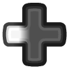

Movement¶
Note: This page assumes that you have the left-click and right-click behaviors in Myth set up as described on the Controls page.
Main Controls¶
Moving and Facing¶
to move the cursor to a desired destination.
while touching
If you click-and-drag at the destination spot, you will also set the direction the units will face when they arrive there. As you begin to “drag” you will see an arrow pointing in your desired facing direction; release the trigger when you’re happy with where it is pointing.
(If you’re not doing click-and-drag, remember you still need to leave your thumb on the pad in order for the click to register.)
In any case, when you designate a destination, your currently selected units will pathfind their way there. Note that a unit executing a movement command will not react to enemy attacks. Keep an eye on your dudes!
Formations¶
While you have some units selected, you can choose a formation that will affect your next movement order. For example if you pick the “long line” formation and then give a movement order to some spot, the selected units’ goal is to end up in a “long line” formation at that spot.
If you have left “persistent formations” enabled (as described on the Preferences page), a group of units will remember its formation for subsequent movement commands (unless you reload a savegame). In that case you only have to designate a formation when you want to change or initially set the formation for a particular group of units.
is used to indicate that the next button press will pick the formation that selected units will use at their next destination.
After tapping that paddle button, you will press a control to pick one of the ten available formations. The five most commonly-used formations have these bindings:
Short Line
 Long Line
Loose Line
Staggered Line
Box
In my experience the remaining formations are much less commonly used, especially in singleplayer. Their bindings are:
Rabble
Other Controls¶
Move to Map Spot¶
Waypointing¶
(i.e. shift) can be held while giving a movement command to set the clicked location as a waypoint rather than a destination.
You can create up to four waypoints before clicking on a destination; units will not begin to move until you create that destination.
Normally units will visit each waypoint in turn and then end their move at the destination. However there are two special destination locations you can use to create ongoing “patrol” movement:
If you click on the first waypoint, units will keep visiting each waypoint in order, as a loop.
Or if you click on the last waypoint, units will go from the first waypoint to the last, then visit the waypoints in reverse back to the first, etc. cycling back and forth.
Since a unit under movement orders will not attack an enemy, patrols are mostly just a way to have a visibility probe going back and forth through the fog-of-war. Not often useful.
Changing Group Facing¶
If you issue a movement order and then change your mind about the facing you set at that destination, one option of course is to just issue a new movement order and drag the facing arrow to the direction that you’ve decided you really want. A faster option – although with less fine control – is to directly tweak the facing of your existing destination order left or right in chunks of a few degrees.
You can also use this control even if your units have reached their destination and are now standing still; in that case, it will make the units move to rotate their formation “in place”.
Changing Unit Facing¶
In this situation as you begin to “drag” you will see a facing arrow on each unit in the selected group. Release the trigger when you are happy with where the facing arrows are pointing. None of the units will leave their position, and the shape/placement of the unit formation will not change; the individual units will just turn to look in a different direction.
Changing Formation in Place¶
Unlike the usual formation selection process, this one will take effect as soon as you pick the formation. You don’t have control over exactly where individual units will end up or face, although the new formation will be roughly in the same spot/facing as the current one.